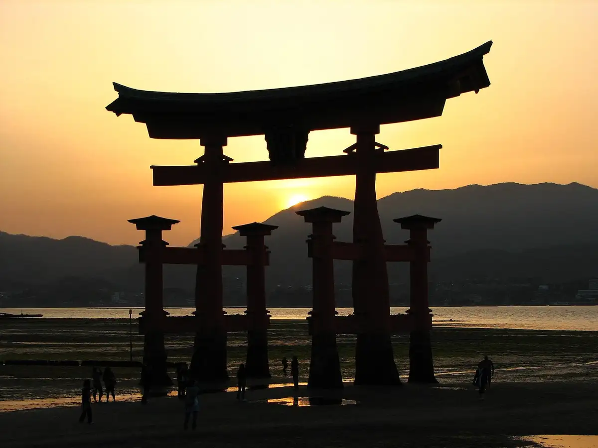
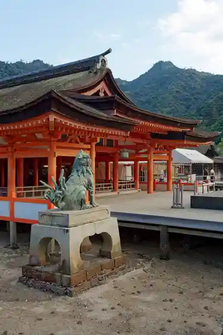
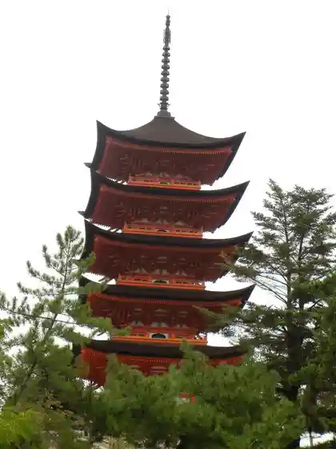
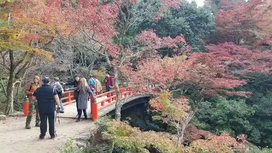

Japan / Hiroshima / Hatsukaichi
Hatsukaichi
Hatsukaichi · Hiroshima
Hatsukaichi
Highlighted on the Hiroshima map.

Stay
Aki Gu Land Hotel
Guranvirio Hotel Miyajima Wazo - Rutoin Hotel Zu -
Ribumakkusu Resort Miyahamaonsen Ocean
Miyajima Gu Land Hotel Ari Moto
Ribumakkusu Resort Aki Miyajima
Miyajima Kami Sen no Yado Hotel Miya Rikyu
Miyajima Koraru Hotel
Hotel Miyajima Besso
Miya Hama Onsen Yu no Yado Miya Hama Gu Land Hotel
Dining
Soji Bo Yume Taun Hatsukaichi Mise
Miyajima Sushi
Miyajima Ajidokoro Shima no Oto
Bincho Ogiya Hatsukaichi Kushi Ko Mise
Ten Ogi
Sumibi Yakiniku Buchi Hatsukaichi Mise
Kiwami Wagyu Teppan Miya Bi
I no Kuchi Suisan Sakanaya Dojo Hiroden Hatsukaichi Ekimae Mise
Uotami Hatsukaichi Ekimae Mise
O Konomi Yaki Tokugawa Hatsukaichi Mise
Miyajima Chaya CHAYA
Ganeshu Hatsukaichi Mise
Tanin Kichi
Umami Tokoro Tomo
HIGHWAY OUTDOOR PARK Miyajima
O Konomi Yaki
Onsen
Aki Gu Land Hotel Public Bath
Guranvirio Hotel Miyajima Tennen Onsen (Nippon Sankei Miyajima Baths) Danseiyo Rotemburo
Miyajima Kami Sen no Yado Hotel Miya Rikyu Public Bath Otohime
Hotel Miyajima Besso Viewpoint Tatami Public Bath Yu Like
Miya Hama Onsen Yu no Yado Miya Hama Gu Land Hotel Hiroshima Gawa Public Bath
Sights
Itsukushima Shrine

Itsukushima Jinja Otorii
Goju to

Autumn Leaves Tani Park

Misen